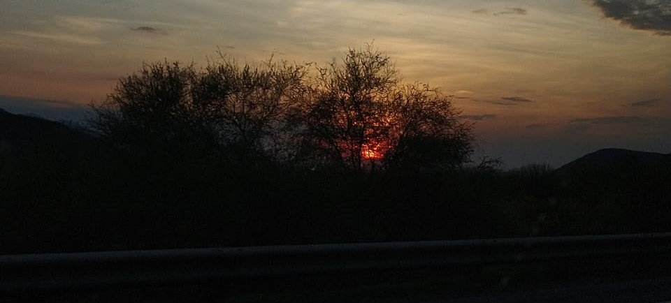
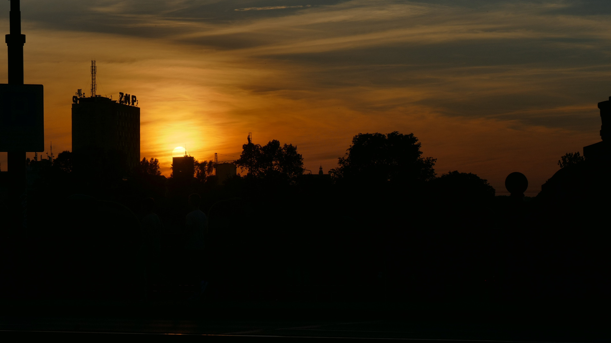

Un atardecer es la despedida del sol, un susurro dorado que se desvanece en el horizonte, como un sueño que se disuelve en el mar del cielo. Es el momento en que el día se viste de gala, con colores que pintan el aire de fuego y carmesí, y el mundo, por un instante, respira en calma. Los pájaros reducen su canto, como si también se prepararan para la llegada de la noche, mientras las sombras se alargan, abrazando lentamente la tierra. Es un ritual sagrado, donde el tiempo parece detenerse, y cada ser viviente, consciente o no, se inclina ante la majestad del final del día.
Es la caricia final de la luz sobre la tierra, un adiós silencioso que deja una promesa: el regreso de un nuevo día. Así, en la quietud de la tarde, el sol se oculta, dejando tras de sí un lienzo de paz y reflejos dorados, un poema escrito en la lengua de la luz. Las montañas se convierten en siluetas, testigos inmóviles del espectáculo celeste, y los ríos reflejan el cielo incendiado, como si la misma agua ardiera con los últimos destellos del sol. Es un momento de contemplación, donde los pensamientos se aquietan y el alma encuentra descanso en la belleza efímera de la luz que se desvanece.
Y en ese instante, todo parece detenerse. Es la hora en que los colores se mezclan, creando un espejo de calma en el firmamento, un poema que el cielo recita en silencio, antes de entregar el mundo a los brazos de la noche. Las estrellas empiezan a titilar tímidamente, anunciando la llegada de la oscuridad, mientras el cielo se transforma en un vasto lienzo de colores profundos y misteriosos. Es el preludio de la noche, un suspiro largo y sereno que cierra el capítulo del día, abriendo las puertas al misterio y al sueño.